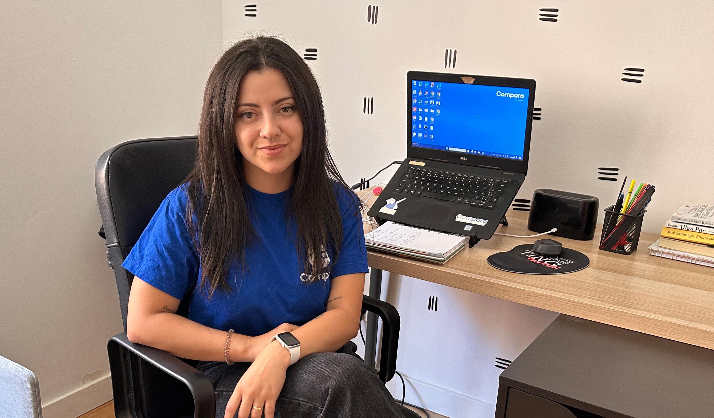

Si yo fuera Elisa, viviría como ella
¿Cómo es trabajar en una empresa 100% remota?
¿Cómo es trabajar en una empresa 100% remota?
Hoy les vamos a contar la historia de Elisa, más conocida por sus amigos de Compara como "Bee". Es de Bahía, Brasil (sí, ahí donde imaginamos pasar las vacaciones de verano). Estudió Comunicación Social y hace 5 años que es parte de Compara.
Le hablamos para que nos cuente la experiencia de trabajar 100% de forma remota, porque, para los que no saben, nosotros desde el 2020 trabajamos en nuestras casitas (sí, somos muy felices).
Esto nos contaba Elisa:
En septiembre cumplo 5 años en Compara. Cuando comenzamos este viaje en 2019, no podía imaginar dónde estaría unos años después. Al principio trabajé en São Paulo, en una oficina. En ese momento, ya había una cultura de teletrabajo, ofreciendo a sus empleados uno o dos días de home office.

Podemos decir que fuimos visionarios, pensar que antes de la pandemia trabajar remoto era algo que no se conversaba en la mayoría de las empresas...
Trabajar en São Paulo, y si no vives cerca, te puede llevar unas 3 horas de viaje entre ir y venir de la pega. Realmente un tiempo en que podrías hacer muchas cosas, cómo cotizar y comparar tu Seguro de Auto unas 60 veces. Bueno y muchas cosas más que no son tan importantes como viajar asegurado.
Cuando llegó la pandemia todos tuvimos que quedarnos en nuestras casas y ahí es cuando comenzó esto, nada volvería a ser igual. Mientras algunos volvían de a poco a habitar de nuevo sus oficinas, Compara comenzó a reafirmar que esto de trabajar remoto estaba bueno.
Durante la pandemia ya estábamos preparados e incluso acostumbrados a trabajar de forma remota. Fue durante este periodo que comencé a hacer ejercicio, tuve más tiempo para leer y también trabajé duro para ayudar a la empresa durante esta complicada fase de confinamiento, a pesar de todo noté una gran mejora en mi calidad de vida.
¿Vieron que les dijimos que éramos visionarios?, ya muchos de nosotros estábamos acostumbrados a esta forma de trabajo.
Pero las virtudes de trabajar remoto no se quedaron en ahorrar 3 horas de vida en São Paulo, cruzaron fronteras, más precisamente mares. Es así que Elisa llevó su experiencia remota a Portugal. ¿Cómo fue esto?
En 2022, mi esposo recibió una oferta para cambiar de país por trabajo. Mi primera acción fue hablar con Compara, informarles de la posibilidad del cambio, porque mi intención era seguir trabajando remotamente con la empresa. Sabía que podía recibir apoyo, pero no me imaginaba que sería tan sencillo y natural. Acabo de completar dos años viviendo en Lisboa, Portugal y trabajando en Compara.
Nos encantan estas historias porque Compara también cruza las fronteras acompañando a sus trabajadores. Elisa ajusta sus horarios para coincidir con sus compañeros y trabajar a la par por todo proyecto que se plantea.
Por último les compartimos un mensaje que nos llena el corazón y como la felicidad es compartida, se los dejamos aquí abajito para que se emocionen con nosotros:
Siempre que la gente me pregunta por qué me gusta trabajar en Compara, respondo que es muy simple: la cultura vibrante, la colaboración positiva dentro del equipo, el respeto y, por supuesto, el trabajo remoto.
Gracias Bee, por tu pasión por los viajes, el trabajo (remoto) y la cultura. Compartimos los mismos sentimientos que tú.
 Actualidad
ActualidadEl recordado programa noventero “Venga Conmigo” marcó a toda una generación en Chile. Su exitoso segmento “Corazones Service” se transformó…
 Actualidad
ActualidadHace aproximadamente 2 meses comenzamos con el cierre de lo que empezó en julio como el “Compariniverse”.
 Actualidad
ActualidadHace unos meses lanzamos Compariniverse: la primera campaña en Chile protagonizada por una celebridad completamente clonada con IA.